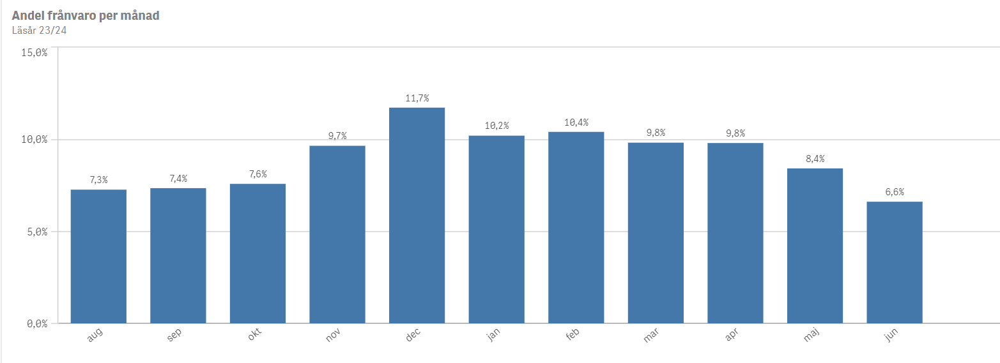
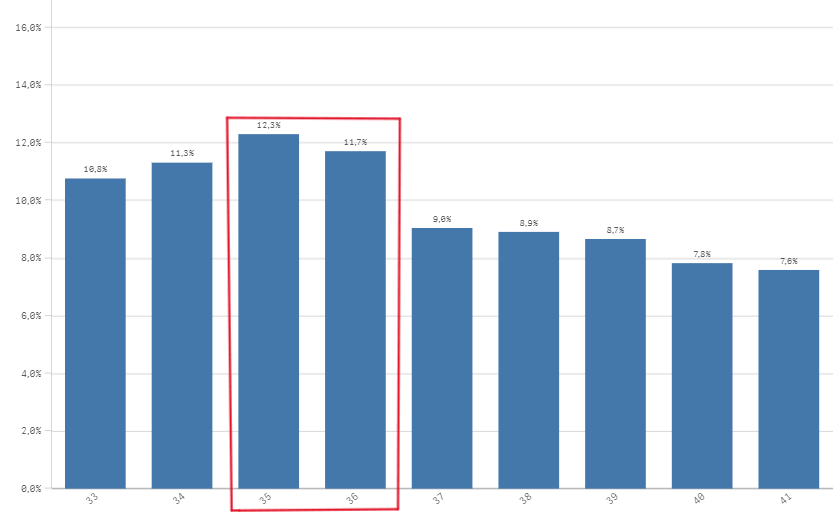

Lov utan lov
Vi kan börja med att analysera hur frånvaron fördelas över våra skolor, särskilt andelen beviljad ledighet. Råå södra skola har den högsta andelen beviljad ledighet, där 1,2% av all lektionstid förloras på grund av godkänd ledighet. I andra änden av spektrat hittar vi Gantofta, där endast 0,1% av lektionstiden missas av samma anledning. När skolorna sorteras efter andelen beviljad ledighet framträder en tydlig trend: skolor med resursstarka föräldrar tenderar att ligga till vänster, medan de med mindre resursstarka föräldrar återfinns till höger. Även om det finns en del undantag. En djupare analys av socioekonomiska faktorer kan ge ytterligare insikter i hur dessa påverkar frånvaromönstren.
Vilka veckor är eleverna lediga som går på de skolor med högst andel föräldrar med eftergymnasial utbildning?  Vi noterar att det är högre andel ledighet före- och efter lov (gröna områden i staplarna). Exempelvis höstlovet v.44, jullovet och sista veckan innan sommarlovet.
Vi noterar att det är högre andel ledighet före- och efter lov (gröna områden i staplarna). Exempelvis höstlovet v.44, jullovet och sista veckan innan sommarlovet.
Vilka veckor är eleverna lediga som går på de skolor med lägst andel föräldrar med eftergymnasial utbildning?  Veckor som sticker ut är exempelvis vecka 15 då ramadan avslutades och Eid al-Fitr inträffade, samt veckan innan sommarlovet. Överlag är det dock sparsamt med beviljad ledighet. Skillnaden känns iofs rimlig i att kapitalstarka hushåll har större möjligheter att ta ledigt.
Veckor som sticker ut är exempelvis vecka 15 då ramadan avslutades och Eid al-Fitr inträffade, samt veckan innan sommarlovet. Överlag är det dock sparsamt med beviljad ledighet. Skillnaden känns iofs rimlig i att kapitalstarka hushåll har större möjligheter att ta ledigt.
Den andra grafen visar också hur omfattande den oanmälda frånvaron är på skolor i områden med socioekonomiska utmaningar (röda områden).
Den naturliga följdfrågan blir om den anmälda/oanmälda frånvaron på dessa skolor kan vara föräldrastödd frånvaro, där exempelvis eleverna är bortresta

Frånvaron vid våra skolor, uppdelad per månad, visar att augusti, september och oktober har liknande nivåer av frånvaro, som illustrerat i Figure 1. Detta mönster ger en utgångspunkt för att undersöka om frånvaron är högre på vissa skolor i augusti jämfört med de följande månaderna. En sådan skillnad kan potentiellt vara en indikator på föräldrastödd frånvaro.
| Skola | Augusti(%) | Medel sep/okt(%) | Skillnad(%-enheter) |
|---|---|---|---|
| Wieselgrensskolan | 12.6 | 11.3 | 1.3 |
| Västra Berga skola | 9.6 | 8.1 | 1.5 |
| Raus Planterings skola | 9.1 | 6.7 | 2.4 |
| Anneroskolan | 12.4 | 9.3 | 3.1 |
| Drottninghögsskolan | 10.8 | 6.4 | 4.5 |
I tabellen har jag identifierat fem skolor där det finns markanta skillnader i frånvaron mellan augusti och de efterföljande månaderna, exempelvis skiljer sig frånvaron i augusti och septembert/oktober hela 4,5 %-enheter på Drottninghögskolan. Detta skulle kunna tyda på föräldrastödd frånvaro. Men när vi analyserar vilka veckor eleverna faktiskt är frånvarande, visar det sig att det inte är den första veckan på höstterminen som sticker ut mest. Istället är det främst den tredje och fjärde veckan som har högst frånvaro. Förlängda lov borde rimligtvis påverka de första veckorna mest, och även om frånvaron är något högre då jämfört med senare veckor i september och oktober, tyder veckofördelningen ändå på att andra faktorer också spelar in.

Elevomsättning
För många skolor så är det ingen omfattande förändring av elevgruppen de första veckorna. Men lite analys av Wieselgrenskolan visar att HT23 så försvann ca 20 elever de första 3-4 veckorna. Om vi tittar närmare på deras data i frånvarostatistiken och Edlevo så framgår det att flertalet av dessa elever aldrig dök upp till skolan eller flyttade men fortsatte att registrera frånvaro. De hade således väldigt hög frånvaro men försvann ur systemet efter ett par veckor. Att skolan hade ett 10-15 extra med nästan 100% frånvaro kommer göra stor skillnad i frånvarostatistiken (grovt uppskattat en 1-3 procentenheter).
Är den ökade frånvaron i augusti på dessa skolor en indikation på ett förlängt lov?
Det är svårt att dra några definitiva slutsatser, även om skillnaderna är påtagliga. En genomgång av siffrorna visar tydligt att frånvaron varierar mellan skolorna. För skolor där elevomsättningen är större påverkas frånvarostatistiken avsevärt, särskilt med elever som aldrig dyker upp. Men många skolor har omfattande problem med hög frånvaro, och eventuella förlängda lov i augusti framstår i det sammanhanget som ett mindre symptom på ett betydligt större problem.